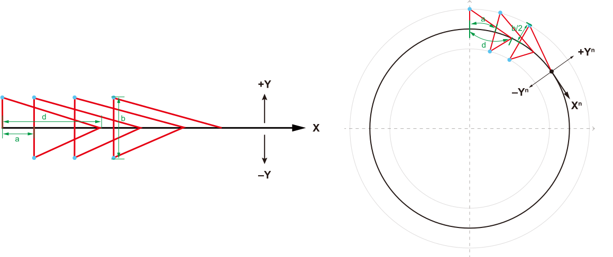
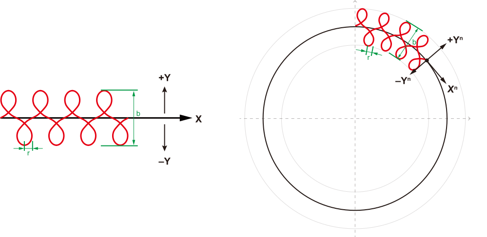

1. 概述
焊接 SDK 是一套用于控制焊接机器人执行多种摆焊轨迹的编程接口。提供了摆焊参数配置、实时控制、状态反馈功能，支持 Z字摆、三角摆、台形摆、月牙摆、正弦摆、圆形摆、8字摆，适用于自动化焊接生产线、机器人焊接工作站等工业场景。
本文档介绍了JAKA焊接工艺包专用SDK接口的规格和使用案例。适用于 V2.3.0版本的JAKA SDK软件包。
2. 快速开始
2.1. 环境要求
操作系统： Windows 10/11, Linux (Ubuntu 18.04+)
编译器： 支持 C++11 标准的编译器（ MSVC 2017+）；Python 3.10
网络环境： 机器人控制器与开发机在同一局域网
编译语言： 支持Python，C++
2.2. 软件版本
JAKA焊接SDK适用于以下版本的软件：
SDK：无限制
控制器：v3.2.15(待定)
App
伺服
SCB
PSCB
2.3. 开始前准备
在开始调用焊接专用接口前，需确保已完成以下事项：
已下载并安装合适版本的JAKA SDK安装包。JAKA SDK软件包可通过 JAKA官网 获取。
已完成环境编译与配置。具体操作见 JAKA SDK手册的快速开始 。
导入模块。
C++ 导入方式
#include "JAKASDK/JAKAZuRobot.h" #include "WeldingSDK/WeldingSDK.h"
Python 导入方式
import jakaWeldingSDK import jakaZuRobot # 机器人控制模块（可选）
# 目录结构
📦cpp
┣ 📂dll
┃ ┗ 📜WeldingSDK.dll
┣ 📂lib
┃ ┗ 📜WeldingSDK.lib
┗ 📂头文件
┃ ┣ 📂nlohmann
┃ ┃ ┗ 📜json.hpp
┃ ┣ 📜welderr.h
┃ ┣ 📜WeldingSDK.h
┃ ┗ 📜WeldStruct.h
📦python3.10
┗ 📂jakaWeldingSDK
┃ ┣ 📜pyweldingsdk.cp310-win_amd64.pyd
┃ ┣ 📜pyweldingsdk.pyi
┃ ┣ 📜WeldingSDK.dll
┃ ┗ 📜__init__.py
📦example
┣ 📂cpp
┃ ┣ 📂JAKASDK
┃ ┃ ┣ 📜jakaAPI.exp
┃ ┃ ┣ 📜jakaAPI.lib
┃ ┃ ┣ 📜JAKAZuRobot.h
┃ ┃ ┣ 📜jkerr.h
┃ ┃ ┗ 📜jktypes.h
┃ ┣ 📂WeldingSDK
┃ ┃ ┣ 📂nlohmann
┃ ┃ ┃ ┗ 📜json.hpp
┃ ┃ ┣ 📜welderr.h
┃ ┃ ┣ 📜WeldingSDK.h
┃ ┃ ┣ 📜WeldingSDK.lib
┃ ┃ ┗ 📜WeldStruct.h
┃ ┣ 📜example_GetWeaveParams.cpp
┃ ┗ 📜example_RunWeave.cpp
┗ 📂python
┃ ┣ 📂jakaWeldingSDK
┃ ┃ ┣ 📜pyweldingsdk.cp310-win_amd64.pyd
┃ ┃ ┣ 📜pyweldingsdk.pyi
┃ ┃ ┣ 📜WeldingSDK.dll
┃ ┃ ┗ 📜__init__.py
┃ ┣ 📂jakaZuRobot
┃ ┃ ┣ 📜jakaAPI.dll
┃ ┃ ┣ 📜jakaAPI.exp
┃ ┃ ┣ 📜jakaAPI.lib
┃ ┃ ┣ 📜jkrc.exp
┃ ┃ ┣ 📜jkrc.lib
┃ ┃ ┣ 📜jkrc.pyi
┃ ┃ ┗ 📜__init__.py
┃ ┣ 📜example_GetWeaveParams.py
┃ ┗ 📜example_RunWeave.py
3. 术语
摆动模式：
Z字摆：焊枪末端一边走Z字形轨迹一边前进的焊接模式。前进轨迹可以为直线或圆弧。

图 3.1 Z 字摆
三角摆：焊枪末端一边走三角形轨迹一边前进的焊接模式。前进轨迹可以为直线或圆弧。
 图 3.2 三角摆
台形摆：焊枪末端一边走倒放的梯形轨迹一边前进的焊接模式。前进轨迹可以为直线或圆弧。

图 3.3 台形摆
月牙摆：焊枪末端一边走圆弧形轨迹一边前进的焊接模式。前进轨迹可以为直线或圆弧。

图 3.4 月牙摆
正弦摆：焊枪末端一边走S形轨迹一边前进的焊接模式。前进轨迹可以为直线或圆弧。

图 3.5 正弦摆
圆形摆：焊枪末端一边走圆形或椭圆形轨迹一边前进的焊接模式。前进轨迹可以为直线或圆弧。

图 3.6 圆形摆
8字摆：焊枪末端一边走8字形轨迹一边前进的焊接模式。前进轨迹可以为直线或圆弧。
 图 3.7 8字摆
摆动频率 ：焊枪在单位时间内完成的完整摆动周期数
左、右摆幅 ：焊枪从中线位置向左（+Y）或向右（-Y）摆动的最大距离
摆长半径 ：月牙摆、圆形摆和8字摆的摆动轨迹半径
左、右、中间停留时间 ：焊枪在摆动极限位置或中心位置的停留时长
纵角 ：指焊枪在焊接方向平面内的倾斜角度，即焊枪与焊缝垂直线的夹角。下图以正弦摆为例，其他摆动模式同理。

备注
Z：焊枪的z方向
绿色线：纵角为0°
橙色线：纵角为正值
蓝色线：纵角为负值
横角 ：指焊枪在垂直于焊接方向平面内的倾斜角度。下图以正弦摆为例，其他摆动模式同理。

备注
X：焊接方向
绿色线：纵角为0°
橙色线：纵角为正值
蓝色线：纵角为负值
中心抬升量 ：焊枪在摆动中心点相对于两侧的高度偏移
终点摆动频率 ：临近焊缝终点的摆动频率
终点左、右摆幅 ：临近焊缝终点的左右摆幅
渐变路径长度 ：从开始启用渐变参数到焊接轨迹终点之间的距离
4. C++
本节将介绍JAKA SDK（C++、Python）中定义的数据类型和API，主要适用于使用C++创建与虚拟或真实控制器通信的机器人应用程序的软件开发人员。对于需要了解JAKA机器人控制器应用程序的用户也会有一定帮助。
4.1. 结构体定义
4.1.1. 摆焊左右停留类型（ DwellDelayType ）
enum class DwellDelayType : uint8_t
{
DWELL_STOP = 0, // 停止停留（默认）
DWELL_MOVE = 1 // 运动中停留
};
备注
DWELL_STOP : 焊枪到达摆幅极限位置后停止运动，停留指定时间后再反向运动。Z字摆，三角摆，台形摆，月牙摆为此种停留方式。
DWELL_MOVE : 焊枪到达摆幅极限位置后沿焊接方向继续运动，指定停留时间后再反向运动。正弦摆为此种停留方式。
4.1.2. 摆焊连接模式（ BlendWeaveEndMode ）
enum class BlendWeaveEndMode : uint8_t
{
BLEND_NO = 0, // 不连接（默认）
BLEND_YES = 1 // 平滑过渡
};
备注
BLEND_YES : 启用平滑过渡，即摆焊轨迹不强制经过中间点。目前仅支持这一种模式。
BLEND_NO : 不启用平滑过渡，即摆焊轨迹强制经过中间点。
4.1.3. 摆焊平面选择（ WeaveFrameType ）
enum class WeaveFrameType : uint8_t
{
PATH = 0, // 摆焊平面跟随焊枪
TOOL = 1 // 摆焊平面跟随工件
};
备注
PATH = 0 ：摆焊平面跟随焊枪末端，当前版本仅支持跟随焊枪。
TOOL = 1 ：摆焊平面跟随由起点和终点位置计算得出的工件平面，焊接过程中，机器人姿态会随之调整。
4.1.4. 摆焊轨迹定义（ WeaveConfig ）
struct WeaveConfig
{
DwellDelayType dwell_delay_type = DwellDelayType::DWELL_STOP; // 停留模式（正弦、圆形、8字摆动不支持停留模式）
BlendWeaveEndMode blend_weave_end = BlendWeaveEndMode::BLEND_YES; // 摆焊连接（默认平滑过渡）
WeaveFrameType frame_type = WeaveFrameType ::PATH; // 摆焊平面跟随焊枪
int direction = 0; // 0:left ; 1:right 起摆方向，默认先左（+Y）起摆
uint8_t reserve[4] = {0}; // 预留参数（扩展用）
};
4.1.5. 摆焊基本参数（ WeaveParams ）
struct WeaveParams
{
int32_t swing_mode = 1; // 摆动模式(1:Z字 2:平面三角 3:台型 4:月牙 5:立焊三角 11:正弦 12:圆形 13:8字)
float swing_frequency = 1.5f; // 摆动频率(Hz)，范围：0.1-10.0
float right_amplitude = 3.0f; // 右摆幅(mm)，范围：0-50.0
float letf_amplitude = 3.0f; // 左摆幅(mm)，范围：0-50.0
float radius = 0.0f; // 摆长半径(mm)，范围：0-50.0，月牙、圆形、8字摆参数
float left_dwell_time = 0.0f; // 左停留时间(s)，范围：0-5.0
float right_dwell_time = 0.0f; // 右停留时间(s)，范围：0-5.0
float mid_dwell_time = 0.0f; // 中停留时间(s) // 平面三角、立焊三角参数
float elevation_angle = 0.0f; // 纵角(°)，范围：–90-90
float azimuth_angle = 0.0f; // 横角(°)，范围：–90-90
float center_rise = 0.0f; // 中心抬升量(mm)，范围：–10-10
};
备注
swing_mode ：必须设置为对应的摆型编号
不同摆型使用不同的参数组合，未使用的参数可忽略或设为0
4.1.6. 摆焊渐变参数（ WeaveGradient ）
struct WeaveGradient
{
float left_amplitude = 0.0f; // 终点左摆幅(mm)，范围：0-50.0
float right_amplitude = 0.0f; // 终点右摆幅(mm)，范围：0-50.0
float swing_frequency = 0.0f; // 终点摆动频率(Hz)，范围：0.1-10.0
float left_dwell_time = 0.0f; // 左停留时间(s)，范围：0-5.0
float right_dwell_time = 0.0f; // 右停留时间(s)，范围：0-5.0
float path_length = 0.0f; // 渐变路径长度
};
注意
圆形摆和8字摆不支持焊接渐变参数。
只有正弦摆需要设置渐变路径长度(
path_length)参数。渐变过程是线性的，从当前值逐步变化到目标值。
4.1.7. 预留寄存器接口（ ReserveRegisters ）
struct ReserveRegisters
{
std::vector<float> float_regs; // 浮点寄存器
std::vector<int32_t> int_regs; // 整型寄存器
std::vector<std::string> str_regs; // 字符串寄存器
};
4.2. 接口说明
4.2.1. 单例与初始化
GetInstance
static WeldingSwingSDK *GetInstance();
功能： 获取 SDK 的单例对象。
Int()
errno_t Init(const std::string ip = "");
功能： 初始化 SDK 并连接到机器人控制器。
Destroy()
errno_t Destroy();
功能： 销毁实例对象，建议在程序停止时主动销毁。
4.2.2. 启动摆焊
4.2.2.1. 启动Z字摆（ WeaveZsine ）
errno_t WeaveZsine(
const WeaveParams params,
const WeaveConfig weave_param = WeaveConfig{},
const WeaveGradient gradient = WeaveGradient{},
const ReserveRegisters reserve_regs = ReserveRegisters{});
功能： 启动Z字摆。
4.2.2.2. 启动其他摆型
备注
启动其他摆型的方法与Z字摆接口模式相同。
启动平面三角摆：
WeavePlaneTriangle启动立焊三角摆：
WeaveVerticalTriangle启动梯形摆：
WeaveTrapezoid启动月牙摆：
WeaveCrescent启动正弦摆：
WeaveSine启动圆形摆：
WeaveCircle启动8字摆：
WeaveFigure8
4.2.2.3. 结束摆焊
errno_t EndWeave();
功能： 结束摆焊。
4.2.2.4. 获取摆焊参数
errno_t GetWeaveParams(WeaveParams ¶ms,
WeaveConfig &weave_param,
WeaveGradient &gradient,
ReserveRegisters &reserve_regs);
功能： 获取上一次下发的摆焊参数。
4.2.2.5. 调节摆焊参数
errno_t AdjustWeaveParam(const float left_amplitude,
const float right_amplitude,
const float swing_frequency);
功能： 实时调整当前xx摆的参数。
5. Python
5.1. 结构体定义
5.1.1. 摆焊参数（ WeaveParams ）
class WeaveParams:
# 摆焊基本参数，包含所有摆焊类型的参数
def __init__(self):
# 摆动模式（必填）
self.swing_mode: int = 1 # 1:Z字 2:平面三角 3:梯形 4:月牙 5:立焊三角 11:正弦 12:圆形 13:8字
# 摆动参数
self.swing_frequency: float = 1.0 # 摆动频率(Hz)，范围：0.1-10.0
self.right_amplitude: float = 3.0 # 右摆幅(mm)，范围：0-50.0
self.left_amplitude: float = 3.0 # 左摆幅(mm)，范围：0-50.0
# 特殊摆型参数
self.radius: float = 0.0 # 摆长半径(mm)，月牙、圆形、8字摆使用
# 停留时间
self.left_dwell_time: float = 0.0 # 左停留时间(s)，范围：0-5.0
self.right_dwell_time: float = 0.0 # 右停留时间(s)，范围：0-5.0
self.mid_dwell_time: float = 0.0 # 中间停留时间(s)，平面三角、立焊三角使用
# 角度参数
self.elevation_angle: float = 0.0 # 横角(°)，范围：-90~90
self.azimuth_angle: float = 0.0 # 纵角(°)，范围：-90~90
# 高级参数
self.center_rise: float = 0.0 # 中心抬升量(mm)，范围：-10.0~10.0
备注
swing_mode ：必须设置为对应的摆型编号
不同摆型使用不同的参数组合，未使用的参数可忽略或设为0
5.1.2. 摆焊渐变参数（ WeaveGradient ）
class WeaveGradient:
# 摆动渐变参数，用于摆焊过程中的参数平滑变化
def __init__(self):
# 渐变目标值
self.left_amplitude: float = 0.0 # 渐变左摆幅(mm)，范围：0-50.0
self.right_amplitude: float = 0.0 # 渐变右摆幅(mm)，范围：0-50.0
self.swing_frequency: float = 0.0 # 渐变摆动频率(Hz)，范围：0.1-10.0
self.left_dwell_time: float = 0.0 # 渐变左停留时间(s)，范围：0-5.0
self.right_dwell_time: float = 0.0 # 渐变右停留时间(s)，范围：0-5.0
# 渐变控制
self.path_length: float = 0.0 # 渐变路径长度(mm)，正弦摆专用
注意
圆形摆和8字摆不支持焊接渐变参数。
只有正弦摆需要设置渐变路径长度(
path_length)参数。渐变过程是线性的，从当前值逐步变化到目标值。
5.1.3. 摆焊配置参数（ WeaveConfig ）
class WeaveConfig:
# 摆焊轨迹配置参数
def __init__(self):
# 停留模式
self.dwell_delay_type: int = 0
# 连接模式
self.blend_weave_end: int = 1
# 平面选择
self.frame_type: int = 0
# 摆动方向
self.direction: int = 0
参数说明：
- 停留模式（
dwell_delay_type）： int = 0：焊枪到达摆幅极限位置后停止运动，停留指定时间后再反向运动。Z字摆，三角摆，台形摆，月牙摆为此种停留方式。int = 1：焊枪到达摆幅极限位置后沿焊接方向继续运动，指定停留时间后再反向运动。正弦摆为此种停留方式。
- 停留模式（
- 连接模式（
blend_weave_end）： int = 1：启用平滑过渡，即摆焊轨迹不强制经过中间点。目前仅支持这一种模式。
- 连接模式（
- 平面选择（
frame_type）： int = 0：摆焊平面跟随焊枪末端，当前版本仅支持跟随焊枪。int = 1：摆焊平面跟随由起点和终点位置计算得出的工件平面，焊接过程中，机器人姿态会随之调整。
- 平面选择（
- 摆动方向（
direction）： int = 0：起摆方向为左（+Y）。int = 1：起摆方向为右（-Y）。
- 摆动方向（
5.1.4. 预留寄存器（ ReserveRegisters ）
class ReserveRegisters:
# 预留寄存器接口，目前暂无实际功能
def __init__(self):
self.float_regs: list[float] = [] # 浮点寄存器列表
self.int_regs: list[int] = [] # 整型寄存器列表
self.str_regs: list[str] = [] # 字符串寄存器列表
5.2. 接口定义
5.2.1. 单例与初始化
GetInstance()
def GetInstance() -> "WeldingSDK":
功能： 获取 WeldingSDK 的单例对象。
__init__()
def __init__(self) -> None:
功能： 构造函数，创建焊接工艺包对象。
Int()
def Init(self, ip: str = "") -> int:
功能： 初始化接口，用于与焊接工艺包后端建立长连接通讯。
Destroy()
def Destroy(self) -> int:
功能： 销毁实例对象，建议在程序停止时主动销毁。
5.2.2. 启动摆焊
5.2.2.1. 启动Z字摆（ WeaveZsine ）
def WeaveZsine(self,
params: WeaveParams,
weave_param: WeaveConfig = None,
gradient: WeaveGradient = None,
reserve_regs: ReserveRegisters = None) -> int:
功能： 开启Z字摆。
5.2.2.2. 启动其他摆型
备注
启动其他摆型的方法与Z字摆接口模式相同。
启动平面三角摆：
WeavePlaneTriangle()启动立焊三角摆：
WeaveVerticalTriangle()启动梯形摆：
WeaveTrapezoid()启动月牙摆：
WeaveCrescent()启动正弦摆：
WeaveSine()启动圆形摆：
WeaveCircle()启动8字摆：
WeaveFigure8()
5.2.2.3. 结束摆焊
def EndWeave(self) -> int:
功能： 停止摆焊。
5.2.2.4. 摆焊状态确认
def IsWeaving(self) -> Tuple[int, bool]: ...
功能： 检查当前是否正在摆焊。
返回值：
True表示正在摆焊，False表示未摆焊。
5.2.2.5. 获取摆焊参数
def GetWeaveParams(self) -> Tuple[int, WeaveParams, WeaveConfig, WeaveGradient]:
功能： 获取上一次下发的摆焊参数。
5.2.2.6. 调节摆焊参数
def AdjustWeaveParam(self,
left_amplitude: float,
right_amplitude: float,
swing_frequency: float) -> int:
功能： 实时调整当前xx摆的参数。
6. 错误代码
6.1. c++
define ERR_SUCC 0 // 成功
define ERR_INIT_FAIL -1 // 初始化失败
define ERR_NOT_INIT -2 // 未初始化
define ERR_NO_RESPONSE -3 // 未响应
define ERR_SWING_NOT_RUNNING -32007 // 摆动未开启
define ERR_SUPERPOS_NOT_ENABLE -32008 // 位置叠加功能未启动
define ERR_SWING_ALREADY_RUNNNING -32009 // 重复开启摆动
6.2. Python
ERR_SUCC = 0 # 成功
ERR_INIT_FAIL = -1 # 初始化失败
ERR_NOT_INIT = -2 # 未初始化
ERR_NO_RESPONSE = -3 # 未响应
ERR_SWING_NOT_RUNNING = -32007 # 摆动未开启
ERR_SUPERPOS_NOT_ENABLE = -32008 # 位置叠加功能未启动
ERR_SWING_ALREADY_RUNNING = -32009 # 重复开启摆动
7. 使用示例
7.1. 基础摆焊流程（c++）
#include "JAKASDK/JAKAZuRobot.h"
#include "WeldingSDK/WeldingSDK.h"
const std::string ROBOT_IP = "192.168.182.202";
const double M_PI = 3.1415926535;
// 辅助函数
JointValue GetRadiansJoints(const double joints[6])
{
JointValue joint_radians;
for (int i = 0; i < 6; i++)
{
joint_radians.jVal[i] = joints[i] * M_PI / 180.0;
}
return joint_radians;
}
CartesianPose GetRadiansPose(const double pose[6])
{
CartesianPose pose_radians;
pose_radians.tran.x = pose[0];
pose_radians.tran.y = pose[1];
pose_radians.tran.z = pose[2];
pose_radians.rpy.rx = pose[3] * M_PI / 180.0;
pose_radians.rpy.ry = pose[4] * M_PI / 180.0;
pose_radians.rpy.rz = pose[5] * M_PI / 180.0;
return pose_radians;
}
int main()
{
JAKAZuRobot robot; // 创建机器人对象
robot.login_in(RobotIP.c_str(), true, "jaka_sdk", "Jaka@1234"); // 登录
WeldingSDK welding; // 创建焊接工艺包对象
welding.Init(RobotIP); // 初始化
// 机器人运动到开始位置
double init_J[6] = {0, 90, -90, 90, 90, 0};
JointValue initJoints = GetRadiansJoints(init_J);
robot.joint_move(&initJoints, MoveMode::ABS, true, 3);
WeaveParams params; // 开启正弦摆
params.letf_amplitude = 3.0; // 设置左摆幅 3.0 mm
params.right_amplitude = 3.0; // 设置右摆幅 3.0 mm
params.swing_frequency = 1.0; // 摆频 1.0 Hz
params.left_dwell_time = 0.5; // 左摆停顿时间 0.5 s
params.right_dwell_time = 0.5; // 右摆停顿时间 0.5 s
welding.WeaveSine(params);
// 下发运动轨迹
double pos_1[6] = {100, 0, 0, 0, 0, 0};
CartesianPose pose_1 = GetRadiansPose(pos_1);
// 相对直线运动，向 +X 方向移动 100 mm. 为了与后续相对直线运动可以圆弧过渡，is_block 需要设置为 False，tol 参数必须大于0
robot.linear_move(&pose_1, MoveMode::INCR, false, 13, 500, 5.0);
double pos_2[6] = {50, 100, 0, 0, 0, 0};
CartesianPose pose_2 = GetRadiansPose(pos_2);
// 相对直线运动，向 +Y 方向移动 100 mm
robot.linear_move(&pose_2, MoveMode::INCR, true, 13, 500, 5.0);
welding.EndWeave(); // 结束正弦摆
welding.Destroy();
robot.login_out();
return 0;
}
7.2. 基础摆焊流程（python）
import jakaWeldingSDK
import jakaZuRobot
import math
def basic_weave_example():
"""基础摆焊示例：Z字摆"""
robot_ip = "192.168.182.202"
# 1. 初始化机器人
robot = jakaZuRobot.RC(robot_ip)
robot.login(1, "jaka_sdk", "Jaka@1234")
# 2. 初始化焊接SDK
welding = jakaWeldingSDK.WeldingSDK()
welding.Init(robot_ip)
# 3. 机器人运动到起始位置
init_joints = list(map(math.radians, [0, 90, -90, 90, 90, 0]))
robot.joint_move(
joint_pos=init_joints,
move_mode=0,
is_block=True,
speed=120,
)
# 4. 配置并启动Z字摆
params = jakaWeldingSDK.WeaveParams()
params.swing_mode = 1 # Z字摆
params.left_amplitude = 5.0
params.right_amplitude = 5.0
params.swing_frequency = 1.0
params.left_dwell_time = 0.3
params.right_dwell_time = 0.3
result = welding.WeaveZsine(params)
if result != 0:
print(f"启动Z字摆失败，错误码: {result}")
return
# 5. 执行焊接轨迹
# 第一条直线，带圆弧过渡
end_pos_1 = [100, 0, 0, 0, 0, 0] # X方向移动100mm
robot.linear_move_extend(
end_pos=end_pos_1,
move_mode=1, # 相对运动
is_block=False, # 非阻塞，允许后续指令立即执行
speed=13,
acc=500,
tol=5.0 # 过渡半径5mm
)
# 第二条直线，与第一条平滑连接
end_pos_2 = [0, 100, 0, 0, 0, 0] # Y方向移动100mm
robot.linear_move_extend(
end_pos=end_pos_2,
move_mode=1,
is_block=True, # 阻塞，等待运动完成
speed=13,
acc=500,
tol=0 # 无过渡
)
# 6. 停止摆焊
welding.EndWeave()
# 7. 清理资源
robot.logout()
welding.Destroy()
8. 更新日志
版本 |
时间 |
内容 |
|---|---|---|
V01 |
2025.12.30 |
初版，增加摆焊接口 |